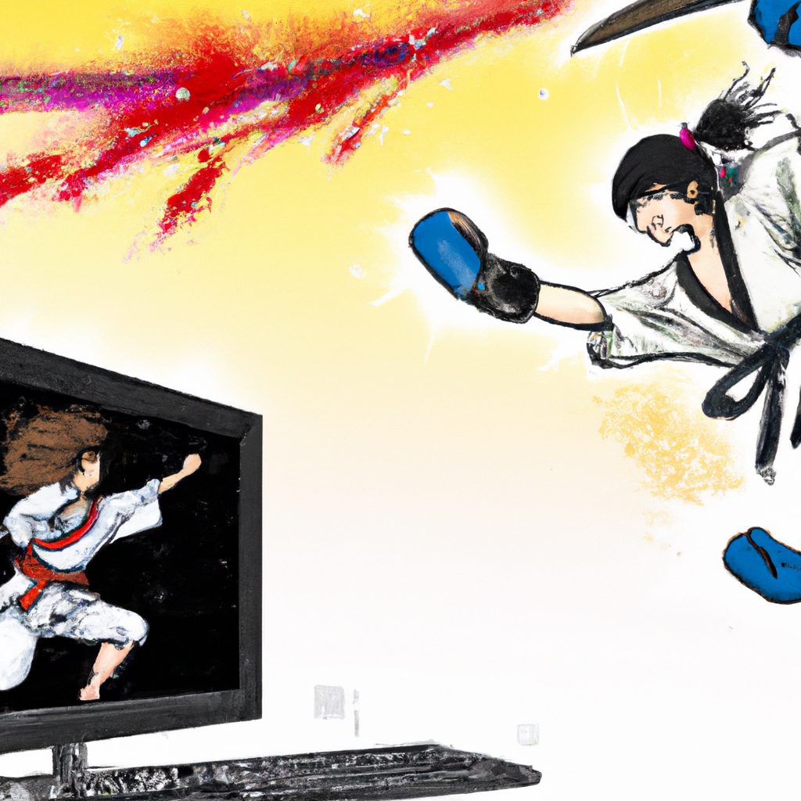

Why Karate will always defeat AI
Karate has been around for centuries, and it is one of the oldest martial arts in the world. It is a form of self-defense and a way to build physical and mental strength. Karate is more than just a physical activity, it is an art form that teaches discipline, respect, and focus. It is a form of exercise that offers many benefits, such as improved physical fitness, mental clarity, and increased self-confidence.
On the other hand, AI is a relatively new technology and it is rapidly evolving. AI can help with many tasks, such as identifying objects, recognizing patterns, and understanding natural language. It has many potential applications, such as autonomous driving, medical diagnosis, and robotics.
However, AI can never replace karate. Karate is much more than just a physical activity; it is a form of self-defense, a way of life, and a way to build strength and character. AI lacks the emotional and spiritual components that karate can offer. It is also limited by the fact that it is not able to learn the nuances of human behavior, something karate can teach.
At the end of the day, AI and karate are two different things. While AI has the potential to automate many tasks and make our lives easier, there are some things that technology can never replace. Karate is one of those things, and it will remain a valuable part of our culture for years to come.